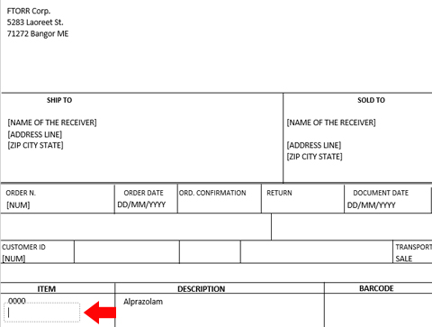

Introduction
Turns this...
...into this!
The idea behind this program is to work alongside software that exports shipping documents, invoices and other documents to Microsoft Word format (.rtf, .doc, .docx).
One of such software is Easyfatt by Danea Soft.
With few changes to its source, DeliveryNote2XML can be easily adapted to work with any software similar to Easyfatt.
DeliveryNote2XML converts dynamically generated shipping documents from RTF format to XML.
Warning
In order to function properly, DeliveryNote2XML could close Microsoft Word/Excel without prompt.
So, make sure you have saved any open documents before launching the program.
How to Use This Program
First, the program is tailored to a specific document structure, so you need a delivery note in the correct format. For that, you can use one of the samples in the samples folder or you can fill in a template yourself.
Empty templates can be found in the templates folder.
Once you have a valid delivery note, follow these steps:
-
Launch DeliveryNote2XML
- Select your delivery note by clicking Open RTF file
-
Optionally, click Save XML file as... to choose the location where the generated XML file will be saved. By default, it's the same folder as the RTF document
-
Click CONVERT
How to Fill In a Delivery Note Template
There are frames in the template.
Each frame contains a specific piece of information (e.g. company name, item code, item description, quantity, ecc.).
Here are some important points:
-
Frames in the upper left-hand corner of the document hold data about the seller (You).
-
Frames in the SHIP TO and SOLD TO sections hold data about the buyer (that is: your customer).
Note: DeliveryNote2XML looks in the customer data file for discounts to be applied to each customer.
This means the customer id in each delivery note must be found in the customer data file, otherwise a warning will be issued.You can change this file location by clicking on the Change button in the UI
-
Just below the SHIP TO and SOLD TO sections, you can find frames for:
- - Order date
-
- Order number
- - Document date
-
- Document number...
...and so on.
most frames have a label that is self-explanatory
-
Next follows item data. Each line in this section identifies one product:
code, ...
... description ...
...and quantity.
Note the first line is a sample and it's pre-filled
-
Make sure to remove unused item frames, or the program will crash.
Note: empty non-item frames need not to be removed.
- More frames follow further on down in the template
Unused Frames
Some frames are empty.
They can be used in the future to add more data, such as: vat code...
...or a footnote.
Click inside any frame and use arrow keys to move to the previous/next frame.
Obviously, the source code of the application would need to be modified to account for the new frames.
Exception Handling
Easyfatt-like software can sometimes produce documents with an invalid structure.
A common glitch is when customer information is incorrectly placed in the DESCRIPTION frame of the first item.